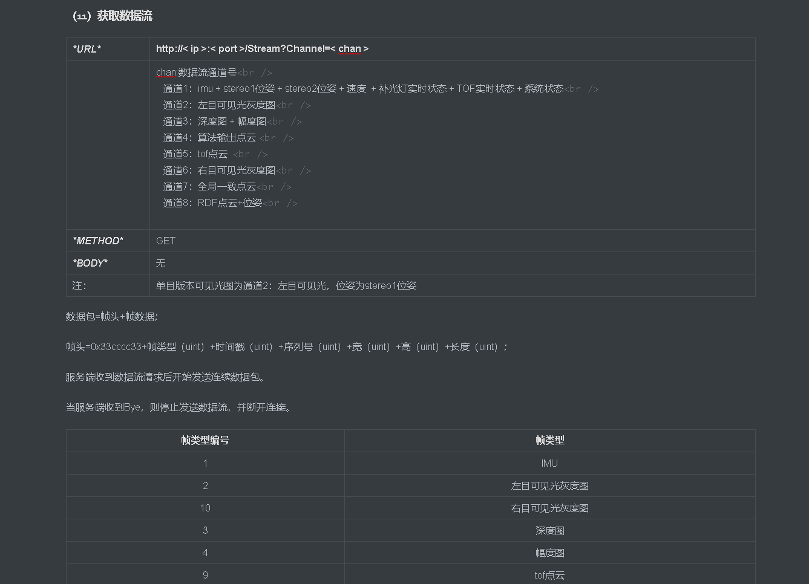
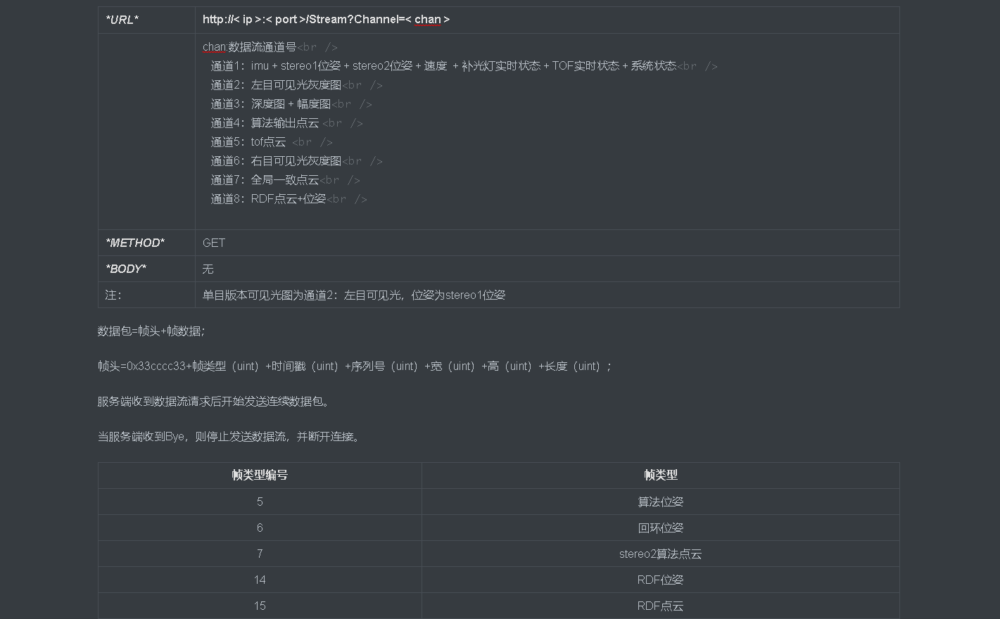
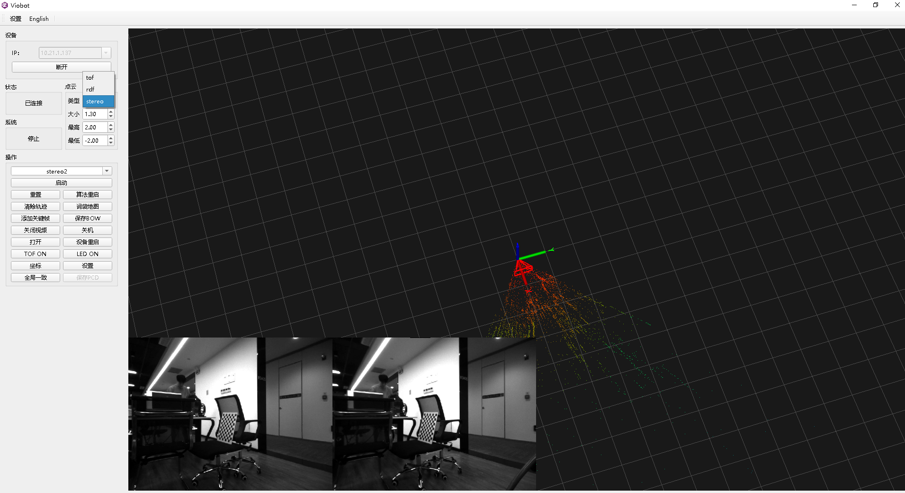
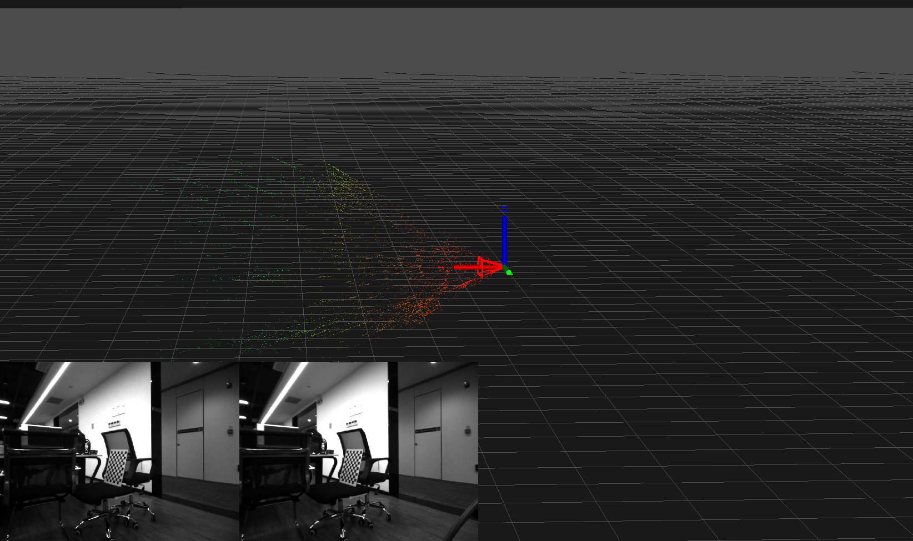
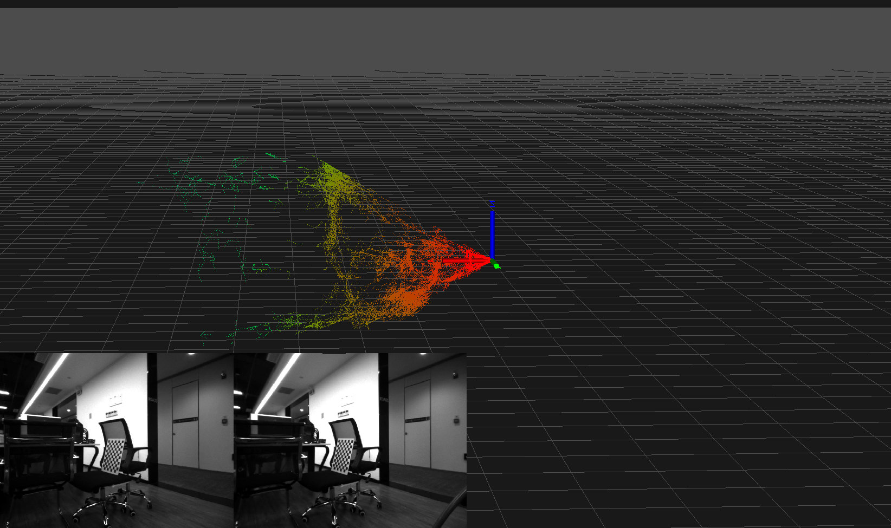
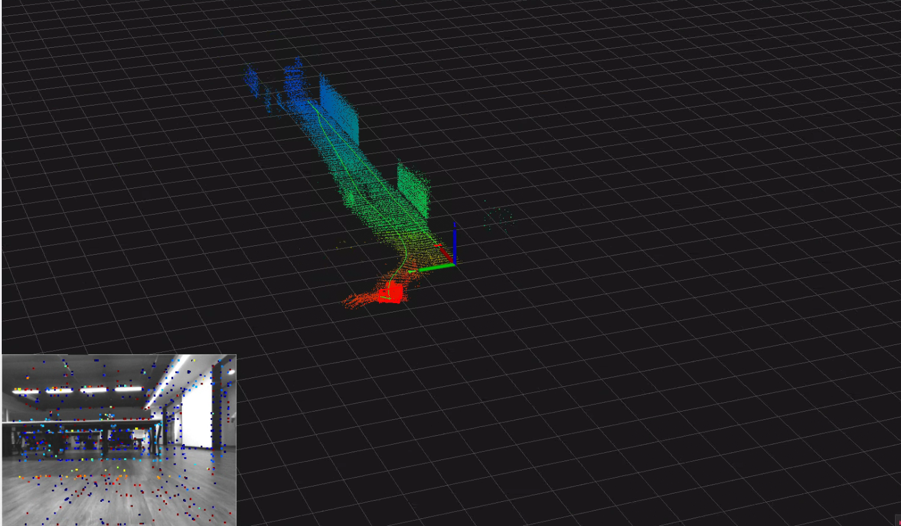
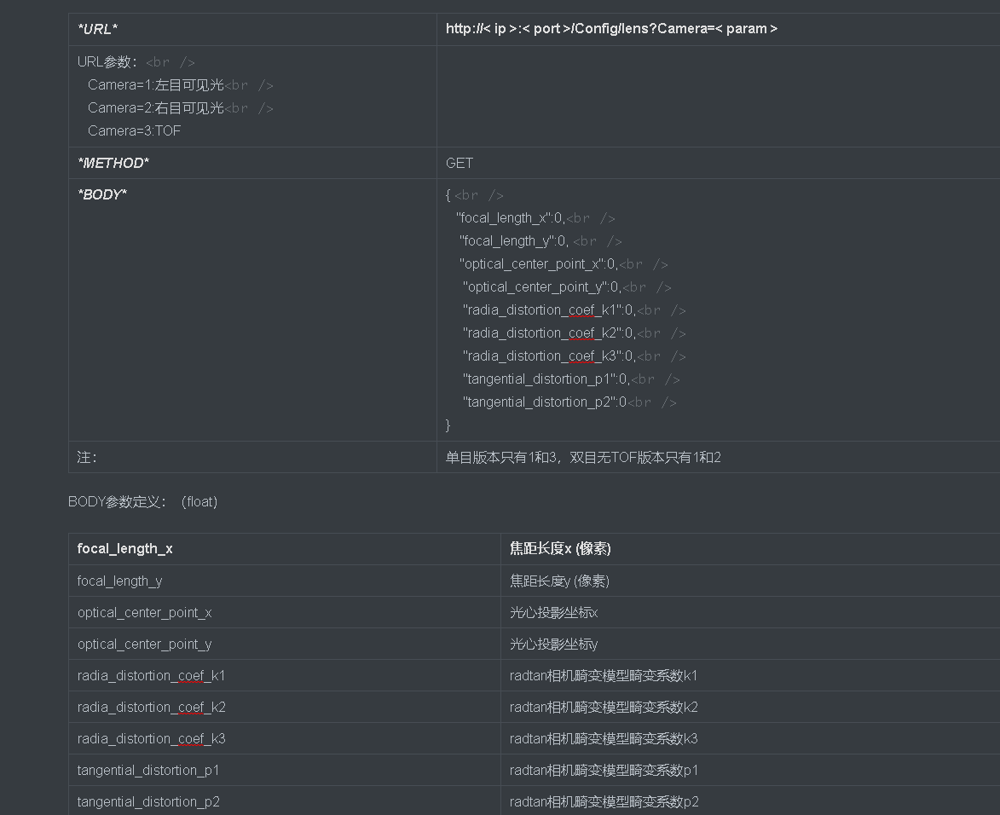
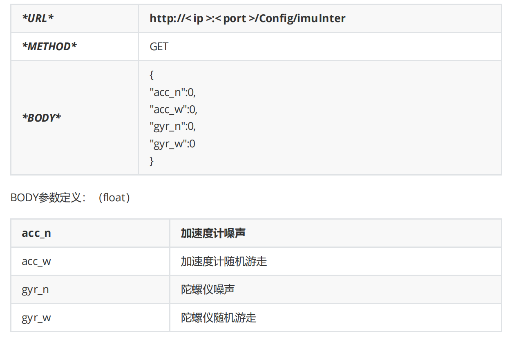

输出数据说明
一.原始数据
1.ROS话题
1）相机原始图像数据
Type: sensor_msgs::Image
Topic: 左目：/image_left 右目：/image_right
2）imu数据
Type: sensor_msgs::Imu
Topic: /imu
3）TOF数据
点云数据：
Type: sensor_msgs::PointCloud2
Topic: /tof_cloud
(x,y,z)
深度图：
Type: sensor_msgs::Image
Topic: /depth_image
幅度图：
Type: sensor_msgs::Image
Topic: /amp_image
4）系统状态
#此项为自定义的ros msg,可以在SDK例程里面找到
Type: system_ctrl::viobot_ctrl
Topic: /sys\_status
2.http输出

二.算法输出
1.位姿
开启stereo2算法后，双目自动完成初始化，直接输出位姿。对应上位机的相机框。
Type: nav_msgs::Odometry
Topic:/pr_loop/odometry_rect
Odometry是包含了位姿(pose)和速度(twist)的.
2.点云
点云需要开启stereo2算法后才有输出。

如UI所示的，stereo2输出的点云有三种——stereo2原生点云，RDF点云，以及TOF点云（TOF版本）。

需要注意的是所有点云发送的话题都是实时的，只有用户自己保存每一帧才有历史点云的说法，上位机显示的是所连接设备发上来的所有点云，点云的坐标系是紧跟着以算法开机初始化后的第一个位姿为原点的“世界”系坐标下的。
（1）stereo2点云
这是直接法直接输出的点云，是根据图片的梯度点计算出来的点深度的集合，所以单帧是成一个散射状态的，这跟摄像头的成像原理有关，当相机运动起来之后，上位机记录的点云多了，才会慢慢的建出一定的形状出来。

此点云的ROS话题为：Type: sensor_msgs::PointCloud2 Topic:/pr_loop/points
注意：点云生成是在产生新的关键帧的时候，所以点云的发布频率是不固定的，它的发布频率跟位姿发布频率是一致的。
（2）RDF点云
这是根据stereo2点云经过滤波和补点（增加稠密度）产出的，它的杂点更少，相对于stereo2点云也更加稠密，相对直观，可用于实时避障。

此点云的ROS话题为：Type: sensor_msgs::PointCloud2 Topic:/pr_loop/points_rdf
（3）TOF融合点云（TOF版）
需要开启TOF。
这是TOF相机数据降采样并融合了相机位姿后的点云，并非TOF的原始点云，可直接用于避障。

此点云的ROS话题为：Type: sensor_msgs::PointCloud2 Topic:/pr_loop/tof_points
发布频率同样是与位姿发布频率一致。
（4）其他点云
开启算法之后用户可以看到加了一个_adjusted后缀的点云
/pr_loop/points_adjusted
/pr_loop/tof_points_adjusted
这两组是后续建全局先验全局地图使用的，后续教程会慢慢讲解。
三.参数数据
1.相机内参
1）ROS话题
Type:sensor_msgs::CameraInfo
Topic: 左目内参：/camera_left_info 右目内参：/camera_right_info tof内参：/tof_info
2）http

2.imu内参
文件地址："/home/PRR/Viobot/install/share/viobot/cali/imu/imu.yaml"
或者使用http获取

3.外参文件
这两个外参文件暂时没有程序获取接口，可以直接访问文件获取。
imu到左目外参文件地址："/home/PRR/Viobot/install/share/viobot/cali/extrinsic/imu_cam.yaml"
tof到左目外参文件地址："/home/PRR/Viobot/install/share/viobot/cali/tof/tof_cam.yaml"